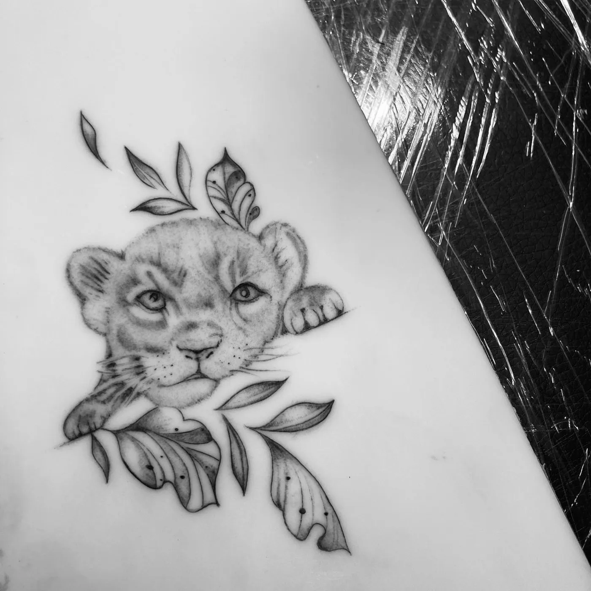
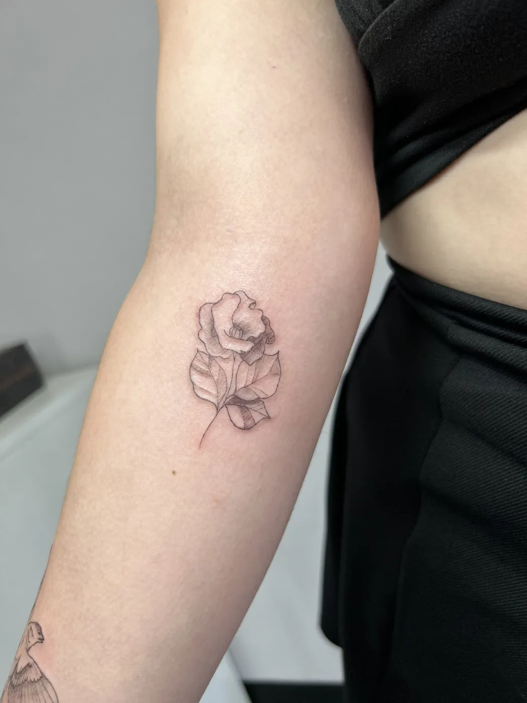
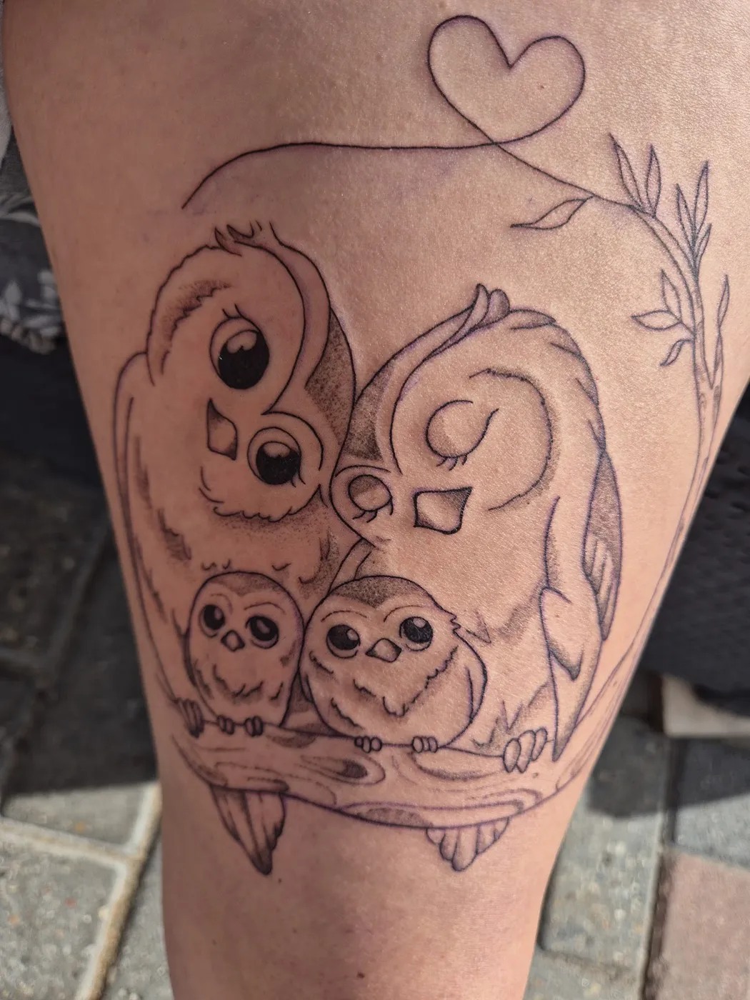
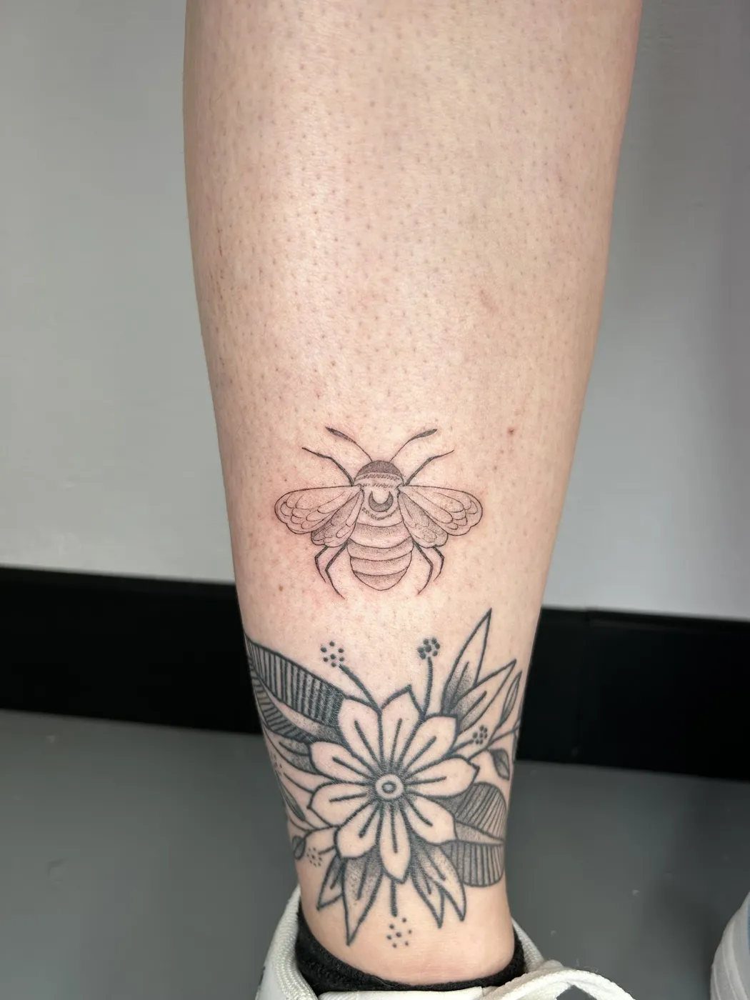
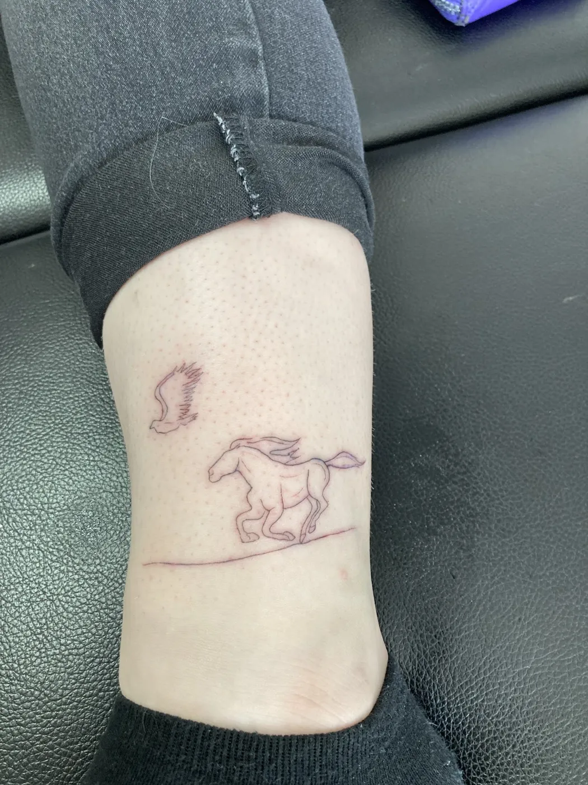
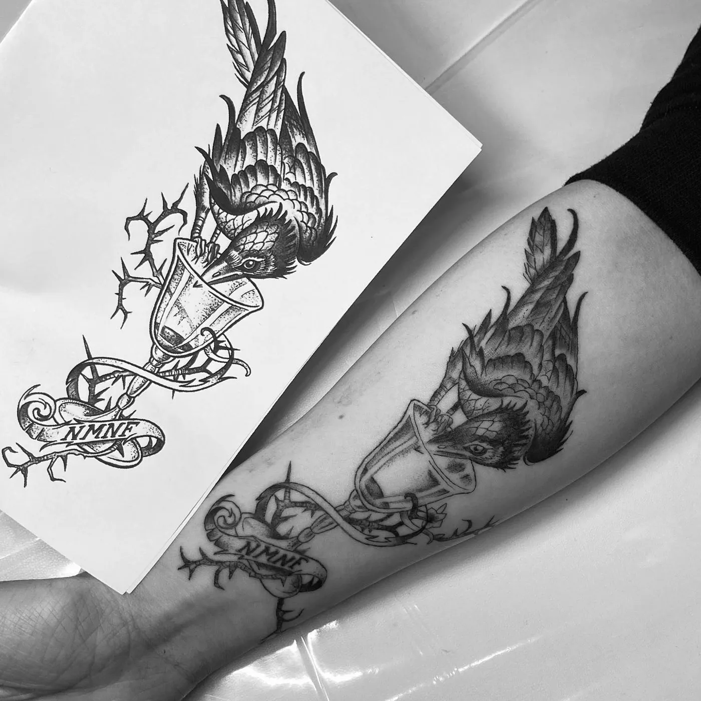

Fineline tattoos bij Joyce
Fijne lijnen,
Fijne lijnen,
zachte hand.
Kom binnen met een idee, een foto of een herinnering die je wil meedragen. Joyce tekent het samen met jou uit en zet het rustig, met uitleg bij elke stap.
4,9 op Google uit 40 reviews


klein, maar fijn4,9
40 reviews
op Google
op Google
eerste tattoo?
je zit hier goed
je zit hier goed
Uit de studioKlein, fijn en helemaal van jou.
Dieren, bloemen, een lijn die iets betekent. Een greep uit wat Joyce de voorbije tijd zette.

Een gezin in lijnen
Bloemen & bijtjes
FinelineElke tattoo begint met een babbel.
Vertel je idee4,9/5
Uit 40 reviews op Google.
Wie bij Joyce zit, komt terug.
Gerund door een vrouwelijke ondernemerLGBTQ+ vriendelijk
"Gezellige lieve jonge vrouw, die je met een hele vriendelijke glimlach onthaalt. Ik voelde mij meteen op mijn gemak."
"Vandaag bij Joyce geweest samen met mijn broer die een beperking heeft (…) Joyce ging heel rustig en super vriendelijk om met hem 🥰 de tattoos zijn ook super mooi gezet!"
"Ondertussen al 4 tattoo’s laten zetten door Joyce. (…) Ik ben ook elke keer weer tevreden! Een leuke babbel met haar, goede uitleg& een hele fijne service!"
Een idee in je hoofd? Kom gerust eens langs.
Stuur een berichtje met je idee of een foto, dan bekijkt Joyce wat kan en spreken jullie een moment af.
